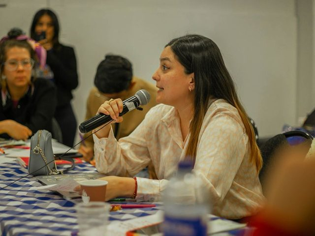
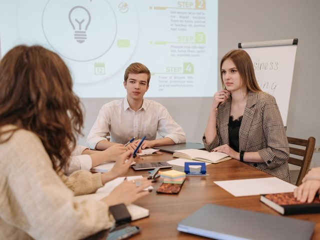
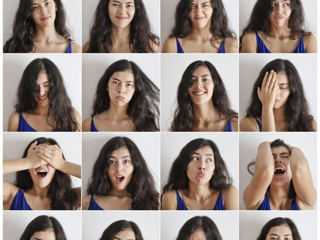
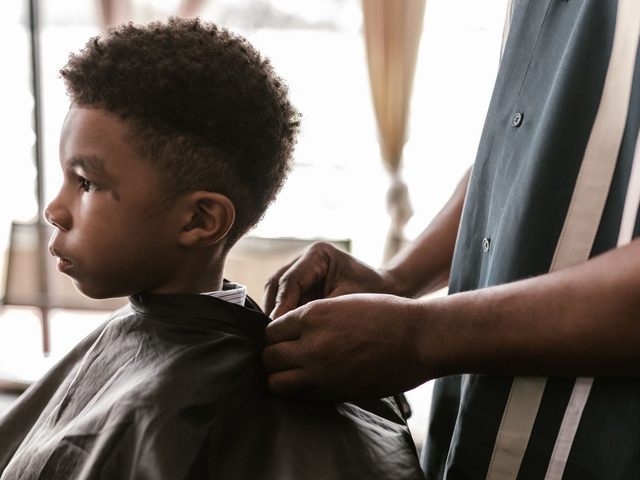

UNIT 34 · VOCABULARY
其他名詞（2）
Other nouns (2)
40 個單字聽・唸・用
本單元單字一覽
其他名詞第二部分，debate 到 influence，共 40 個。很多名詞是動詞或形容詞變來的：decide → decision、honest → honesty、free → freedom。
debatedecisiondepartmentdesiredifferencedifficultydirectiondiscussiondutyedgeeducationeffortemotionenemyenergyengineentranceeventexitfaultfearfeefeelingflagflightfreedomfriendshipgesturegoalgoodnessgovernmentgunhaircuthonestyhumanhumorhungerimportanceincomeinfluence
每個字都有 🔊，先聽發音、跟著唸，再看例句。
單字 1–4

debate
辯論；討論n.
Our class had a debate about school uniforms.
我們班辯論學校制服的問題。
我們班辯論學校制服的問題。
🤔
decision
決定n.
It was a hard decision to make.
這是個很難做的決定。
這是個很難做的決定。

department
部門；系n.
She works in the sales department.
她在業務部工作。
她在業務部工作。
💭
desire
渴望；欲望n. / v.
He has a strong desire to become a doctor.
他非常渴望成為醫生。
他非常渴望成為醫生。
單字 5–8
🔍
difference
不同；差別n.
Can you tell the difference between the twins?
你分得出那對雙胞胎的不同嗎？
你分得出那對雙胞胎的不同嗎？
🧗
difficulty
困難n.
Grandpa has difficulty walking up the stairs.
爺爺爬樓梯有困難。
爺爺爬樓梯有困難。

direction
方向；指示n.
Which direction is the train station?
火車站在哪個方向？
火車站在哪個方向？

discussion
討論n.
We had a discussion about the class trip.
我們討論了班級旅行的事。
我們討論了班級旅行的事。
單字 9–12
📋
duty
責任；義務n.
It's my duty to feed the dog.
餵狗是我的責任。
餵狗是我的責任。

edge
邊緣；邊n.
Don't stand too close to the edge of the cliff.
不要站得離懸崖邊太近。
不要站得離懸崖邊太近。
education
教育n.
Education is important for every child.
教育對每個孩子都很重要。
教育對每個孩子都很重要。
💪
effort
努力n.
She made a big effort to finish the project on time.
她非常努力，準時完成了專題。
她非常努力，準時完成了專題。
單字 13–16

emotion
情緒；情感n.
Music can show many different emotions.
音樂可以表達很多不同的情緒。
音樂可以表達很多不同的情緒。

enemy
敵人n.
The cat and the mouse are enemies in the cartoon.
卡通裡貓和老鼠是敵人。
卡通裡貓和老鼠是敵人。
energy
精力；能源n.
Kids have so much energy!
小孩的精力真充沛！
小孩的精力真充沛！

engine
引擎；發動機n.
The car engine won't start.
車子的引擎發不動。
車子的引擎發不動。
單字 17–20

entrance
入口n.
Meet me at the main entrance of the zoo.
在動物園的大門入口跟我碰面。
在動物園的大門入口跟我碰面。
event
事件；活動n.
The school sports day is a big event.
學校運動會是一件大事。
學校運動會是一件大事。
exit
出口n.
Where is the emergency exit?
緊急出口在哪裡？
緊急出口在哪裡？
🙇
fault
錯誤；過失n.
Don't blame him. It's not his fault.
別怪他，那不是他的錯。
別怪他，那不是他的錯。
單字 21–24

fear
恐懼；害怕n.
My sister has a fear of spiders.
我妹妹很怕蜘蛛。
我妹妹很怕蜘蛛。

fee
費用n.
The entrance fee is 100 dollars.
入場費是一百元。
入場費是一百元。
💗
feeling
感覺；感情n.
I have a feeling that it will rain.
我覺得好像會下雨。
我覺得好像會下雨。

flag
旗子n.
They raised the flag in the morning.
他們早上升旗。
他們早上升旗。
單字 25–28
flight
班機；飛行n.
Our flight to Tokyo leaves at 8 a.m.
我們飛東京的班機早上八點起飛。
我們飛東京的班機早上八點起飛。

freedom
自由n.
Birds have the freedom to fly anywhere.
鳥有到處飛翔的自由。
鳥有到處飛翔的自由。

friendship
友誼n.
Our friendship started in first grade.
我們的友誼從一年級開始。
我們的友誼從一年級開始。
👋
gesture
手勢；姿態n.
He made a gesture for me to come in.
他做手勢要我進來。
他做手勢要我進來。
單字 29–32

goal
目標；（足球）進球n.
My goal is to win the race.
我的目標是贏得比賽。
我的目標是贏得比賽。
😲
goodness
善良；（驚嘆）天啊n.
My goodness! Look at all this snow!
天啊！看看這麼多雪！
天啊！看看這麼多雪！
government
政府n.
The government built a new park in our city.
政府在我們城市蓋了一座新公園。
政府在我們城市蓋了一座新公園。
🔫
gun
槍n.
Police officers carry guns.
警察帶著槍。
警察帶著槍。
單字 33–36

haircut
理髮；髮型n.
I need to get a haircut this weekend.
我這週末要去剪頭髮。
我這週末要去剪頭髮。
🤞
honesty
誠實n.
Honesty is the best policy.
誠實為上策。
誠實為上策。
🧑
human
人類；人的n. / adj.
Dogs can hear sounds that humans can't.
狗聽得到人類聽不到的聲音。
狗聽得到人類聽不到的聲音。
😄
humor
幽默n.
Our teacher has a great sense of humor.
我們老師很有幽默感。
我們老師很有幽默感。
單字 37–40

hunger
飢餓n.
Many people in the world still suffer from hunger.
世界上仍有很多人在挨餓。
世界上仍有很多人在挨餓。
❗
importance
重要性n.
Our teacher talked about the importance of sleep.
老師談到睡眠的重要性。
老師談到睡眠的重要性。

income
收入n.
Mom's income helps pay for our house.
媽媽的收入幫忙付房子的錢。
媽媽的收入幫忙付房子的錢。
🌱
influence
影響n. / v.
My grandfather had a big influence on me.
我爺爺對我影響很大。
我爺爺對我影響很大。
從別的詞變來的名詞
| 原本 | 名詞 |
|---|---|
| decide 決定 | decision |
| discuss 討論 | discussion |
| different 不同的 | difference |
| honest 誠實的 | honesty |
| free 自由的 | freedom |
| important 重要的 | importance |
常見名詞字尾：-sion／-tion、-ence／-ance、-ty、-dom、-ship、-ment。
快問快答：中文 → 英文
1辯論；討論debate
2部門；系department
3不同；差別difference
4方向；指示direction
5責任；義務duty
6教育education
7情緒；情感emotion
8精力；能源energy
快問快答：英文 → 中文
1entrance入口
2exit出口
3fear恐懼；害怕
4feeling感覺；感情
5flight班機；飛行
6friendship友誼
7goal目標；（足球）進球
8government政府
學完了！接下來
複習方法
review
- 回到「📗 單字卡」，按「遮中文」自己考自己
- 再按「遮英文」，看中文說出英文
- 每個例句跟著 🔊 唸一次
準備好了
- 按右上角「📝 前往測驗」
- 測驗錯的題目要訂正到全對
- 訂正完成補送 1 點